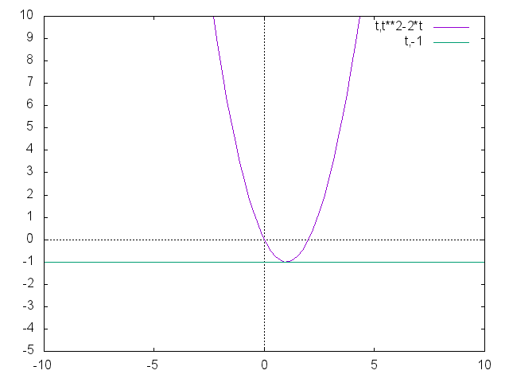
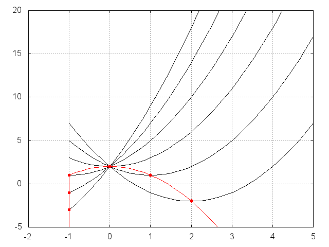

<html></html>
<head>
<meta charset="UTF-8">
<link rel="stylesheet" href="index.css">
</head>
<title>平成30年度青森県教員採用試験別解について</title>
<script type="text/javascript" async
  src="https://cdnjs.cloudflare.com/ajax/libs/mathjax/2.7.1/MathJax.js?config=TeX-AMS_CHTML">
</script>
<style type="text/css">
div2{
  position:relative;
  text-align: center;
  top:  100px;
  font-size:x-large;
}
<div id="menu">
<ul>
<li><a href="#">ホームページ</a></li>
<li><a href="#">リスト</a></li>
<li><a href="#">日記</a></li>
<li><a href="#">掲示板</a></li>
</ul>
</div>
</style>

</style>
<body>
<h1><center>平成30年度青森県教員採用試験解答解説</center></h1>
<style>
h1{
color: #364e96;/*文字色*/
padding: 0.5em 0;/*上下の余白*/
border-top: solid 3px #364e96;/*上線*/
border-bottom: solid 3px #364e96;/*下線*/
}</style>
<br>

<div class="nav">
<ul class="nl clearFix">
<li class="active"><a href="index1.html">大問1</a></li>
<li><a href="index2.html">大問2</a></li>
<li><a href="index3.html">大問3</a></li>
<li><a href="index4.html">大問4</a></li>
<li><a href="index5.html">大問5</a></li>
<li><a href="index6.html">大問6</a></li>
</ul>
</div>
<h2>1.関数\(f(x)=x^4-4x^3+(6a+4)x^2-12ax+2(aは実数の定数)\)について,\(次の(1)〜(3)\)に答えなさい。</h2><br>
<hr style="border:0;border-top:2px solid skyblue;">
(1)\(t=x^2-2x\)とするとき,\(f(x)\)を\(a\)と\(t\)を用いて表しなさい。<br>
解.
<center>
\begin{align*}
　f(x) & = x^4-4x^3+(6a+4)x^2-12ax+2 \tag{1}\\
  　  & = x^4-4x^3+6ax^2+4x^2-12ax+2\tag{2}\\
  & = x^4-4x^3+4x^2+6a(x^2-2x)+2\tag{3}\\
&=(x^2-2x)^2+6a(x^2-2x)+2\tag{4}\\
&=t^2+6at+2\tag{5}
\end{align*}
\begin{align*}
 \underline{\large∴t=t^2+6at+2} \\
 \end{align*}
</center>
<br>
<hr style="border:0;border-top:2px solid skyblue;">
(2)\(t=x^2-2x\)の<b>とり得る値の範囲</b>を求めなさい。
<br>
<font color="#ff0000">※「問題文のとり得る値の範囲とは、\(t\)についての範囲を求めなさいということ！」</font><br>
解.
\begin{align*}
t &= x^2-2x (←平方完成)\tag{6}\\
 &=(x-1)^2-1(平方完成　終)\tag{7}\\
\end{align*}
\begin{align*}
 \underline{\large∴tは(1,-1)の時に最少となる。よって、t≧-1} \\
 \end{align*}
<center></center>
<br>
<hr style="border:0;border-top:2px solid skyblue;">
<br>
\((3)(f(x)の最小値とそのときのxの値をaを用いて表しなさい。\)
<br>
解.
\begin{align*}
  　 f(x)&=t^2+6at+2 (←平方完成)\tag{8}\\
 &=(t+3a)^2-9a^2+2(平方完成　終)\tag{9}\\
  \end{align*}
  \begin{align*}
  \underline{軸t=-3a　頂点(-3a,-9a^2+2) 　(t≧-1)}
    \end{align*}
<br>
<Div Align="center">
<font color="#ff0000">※\(「-3aが-1より''正''か''負''か考える！」\)</font></Div>
\begin{align*}
　( i )-3a< -1のとき、つまり3a>1→a>\frac{1}{3}のとき\\
 t=-1で最小をとる　A.最小値 6a+2(t=-1)\\
t=-1をt=x^2-2xに代入\\
\end{align*}
\begin{align*}
-1&=x^2-2x\tag{10}\\
x^2-2x+1&=0\tag{11}\\
(x-1)^2&=0\tag{12}\\
 　　　　\underline{\Large∴x=1} \\
\end{align*}
\begin{align*}
( ii )-3a≧-1のとき、つまり3a≦1→a≦\frac{1}{3}のとき\\
t=-3aで最小をとる  A.最小値 -9a^2+2(t=-3a)\\
t=-3aをt=x^2-2xに代入\\
\end{align*}
\begin{align*}
-3a&=x^2-2x\tag{13}\\
x^2-2x+3a&=0\tag{14}\\
\end{align*}

    <div style="padding: 10px; margin-bottom: 10px; border: 5px double #333333;">
        <font color="#ff0000">
※解の公式<br>
</font>
<center>
2次方程式 \(ax^2 + bx + c = 0\) の解の公式は
\begin{eqnarray}
x =\large\frac{-b±\sqrt{b^2-4ac}}{2a}
\end{eqnarray}
</center>
</div>
  <font color="black">
\begin{align*}
x^2-2x+3a&=0 の式を解の公式に代入する。\\
x&=\frac{-(-2)±\sqrt{(-2)^2-2^2×(3a)}}{2}\tag{15}\\
&=\frac{2±\sqrt{2^2(1-3a)}}{2}\tag{16}\\
&=\frac{2±2\sqrt{1-3a}}{2}\tag{17}\\
&=1±\sqrt{1-3a}\tag{18}\\
\end{align*}
\begin{align*}
 　　　　\underline{\Large∴x=1±\sqrt{1-3a}} \\
\end{align*}

<br>
<center>
最小値のグラフ
</center>
<center></center>
<br>


</body>
<p></p>
<br>
